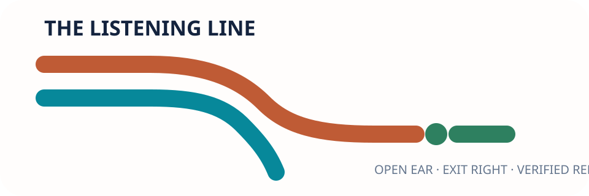
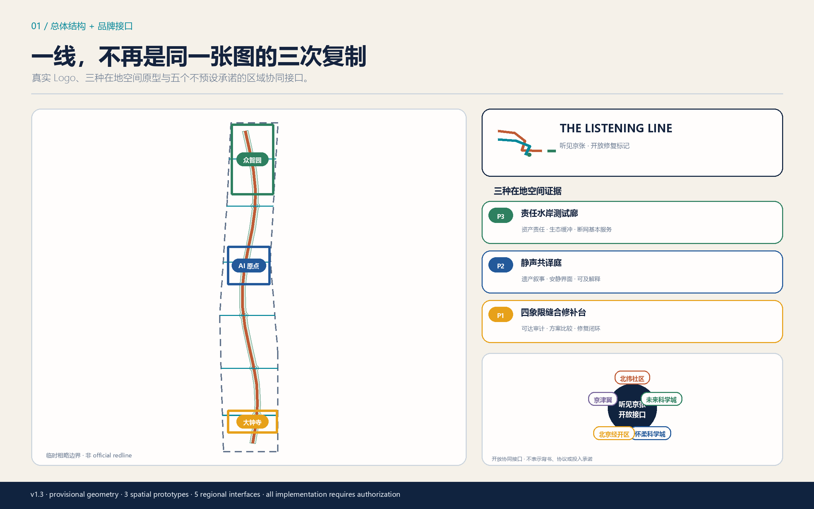
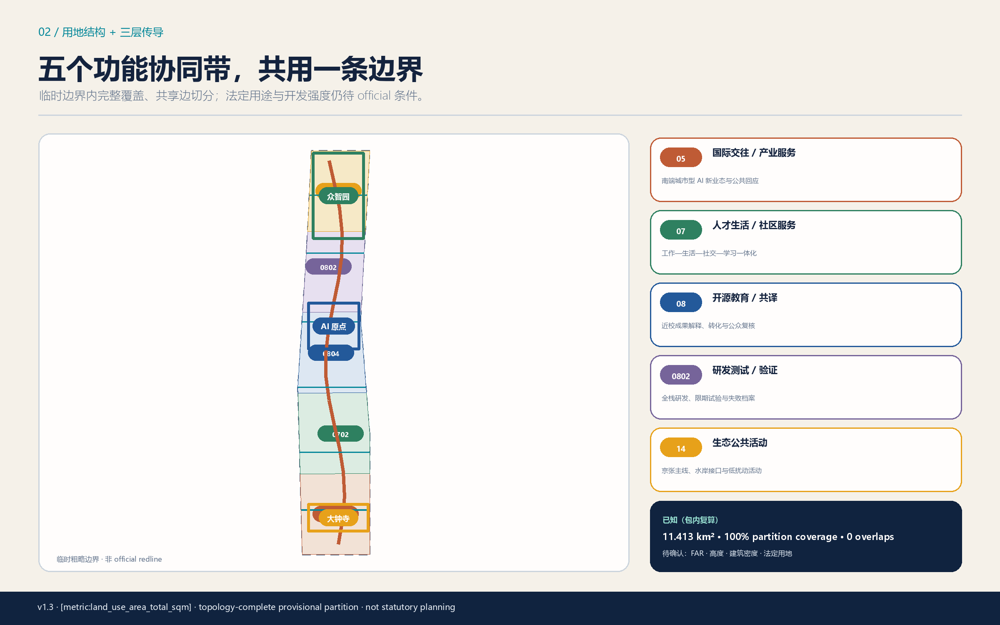
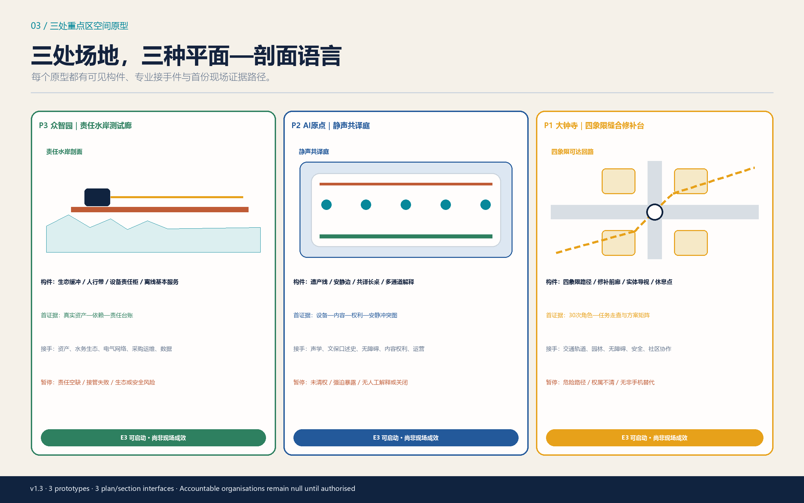
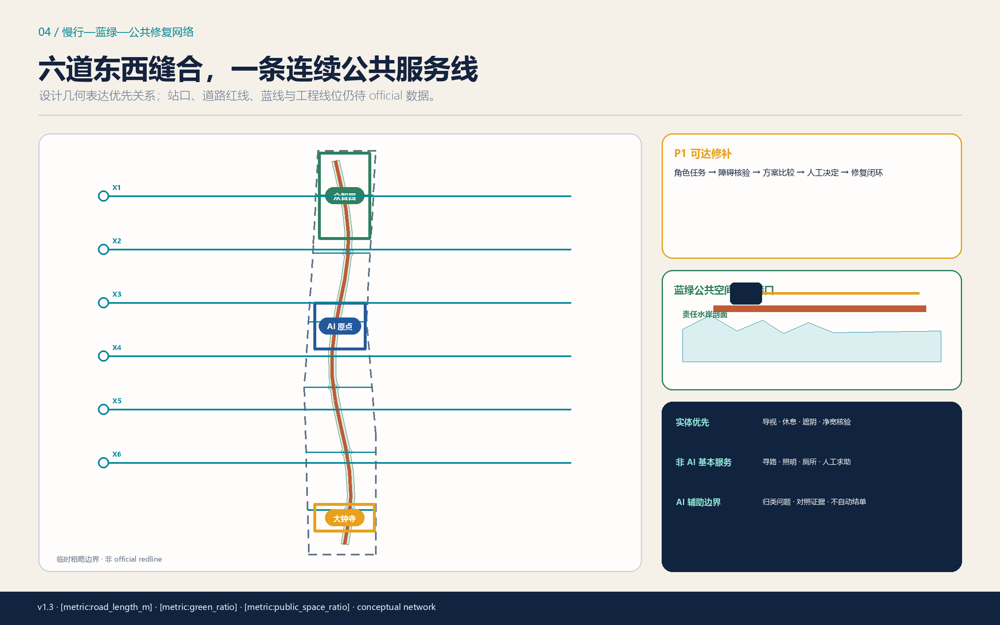
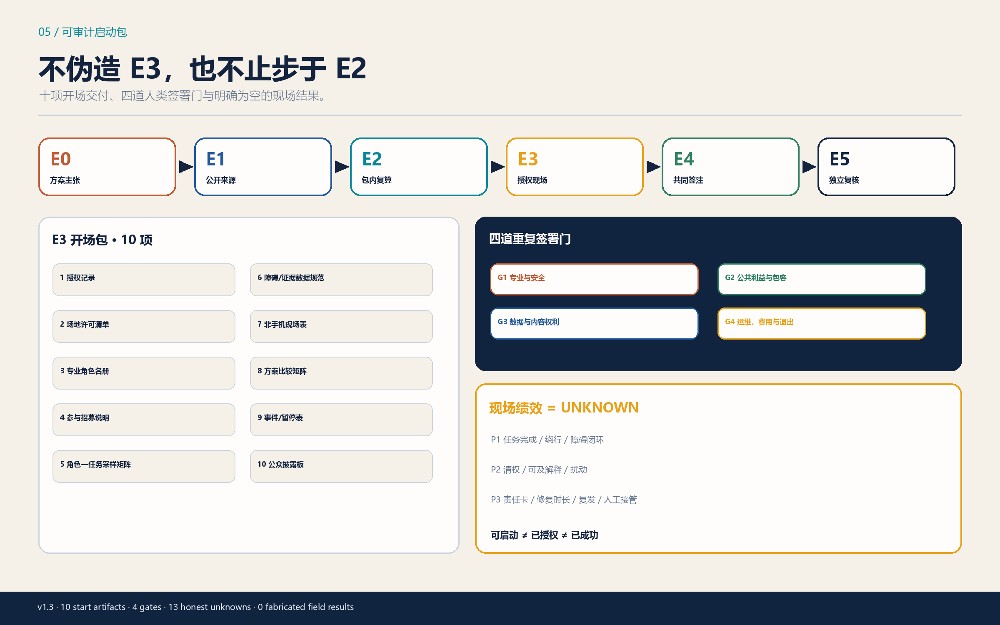

责任水岸测试廊
生态缓冲 · 人行带 · 责任柜 · 断网基本服务
真实资产—依赖—责任台账v1.3 让首轮审稿先看到城市空间：真实品牌标记、正确的用地结构、三种不同原型、慢行蓝绿网络，以及诚实保留现场空值的 E3 开场包。






生态缓冲 · 人行带 · 责任柜 · 断网基本服务
真实资产—依赖—责任台账遗产线 · 安静边 · 共译长桌 · 多通道解释
设备—内容—权利台账与安静冲突图路径 · 修补前廊 · 实体导视 · 人工窗口
30次角色—任务走查、障碍表与方案比较open_interface_no_commitment
官方polygon、控规、站口、权属、蓝线、建筑普查和市政容量仍缺；区域接口不是合作协议；原型尺寸与E3现场证据必须经专业确认和合法授权。
G1 professional/safety · G2 public interest · G3 data/rights · G4 operations/exit
performance_results=null
官方公告和清权任务书定义任务；仓库临时几何仅支持 intake 可视化；政府/官方公开网页为13号线可达、清华园遗产与水岸维护问题提供在地锚点。
23 / 23 mandatory requirements · 15 / 15 design-depth items · 6 Agent tasks · 12 scenarios · 4 testing scenarios · 6 personas · 4 landmarks.
创建 PR 前重新运行确定性校验、空间、视觉、专业证据与上传预检。